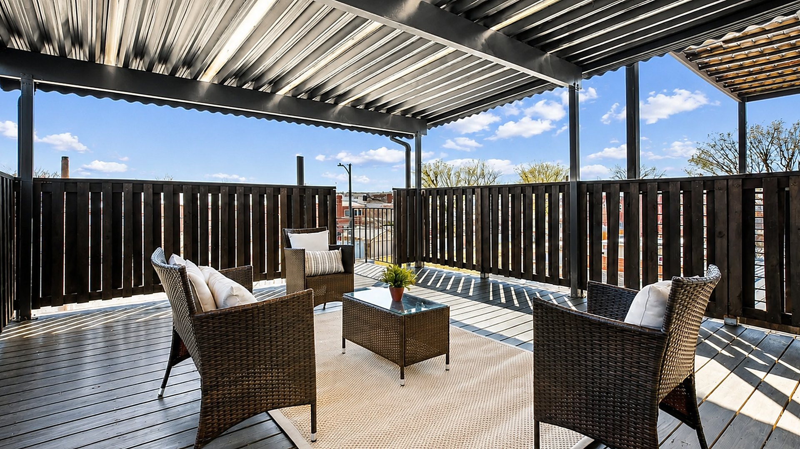

Deck Builder in Northern Virginia
DFC builds custom decks and outdoor living spaces that are structural, permitted and worth the investment — not something that fails in five years. Fairfax, Falls Church, Vienna, McLean, Arlington and the surrounding region.

Deck Building
A deck built to last in Northern Virginia's climate — not the cheapest bid.
Northern Virginia's freeze-thaw cycles, clay soils and humid summers are hard on outdoor structures. The difference between a deck that lasts 30 years and one that starts having problems in year 7 comes down to footing depth, ledger flashing and material selection — things that don't show up in a side-by-side quote comparison.
We dig footings to code depth for Fairfax County's frost line (24 inches minimum), flash ledger connections properly so water can't wick into your rim joist, and use either pressure-treated lumber with the right hardware rating for ground contact or composite decking that actually holds up — Trex Transcend, TimberTech, AZEK — not the budget composites that fade and stain in two seasons.
- Custom single and multi-level decks
- Trex, TimberTech and AZEK composite decking
- Hardwood decking (Ipe, Cumaru, Tigerwood)
- Pressure-treated lumber with proper hardware
- Covered and pergola decks
- Screened porches and three-season rooms
- Patios (pavers, concrete, flagstone)
- Outdoor kitchens and built-in seating
Northern Virginia deck specifics
Permits, setbacks and what Fairfax County actually requires.
Fairfax County deck permits
Any deck over 200 square feet or attached to the house requires a building permit in Fairfax County. Unpermitted decks are flagged by home inspectors and can kill or delay home sales. The permit process requires footing diagrams, structural plans for decks over 30 inches above grade, and inspections at footing, framing and final stages. We handle all of it.
Setback and impervious surface rules
Fairfax County requires rear setbacks that vary by zoning district — typically 25 feet minimum in R-2 through R-4 zones. Decks over 10 feet above grade may count as structures requiring additional clearances. For lots near wetlands or stream buffers (common in parts of Reston, Great Falls and McLean), there are additional RPA setback rules. We check your plat before we design anything.
Ledger attachment — the most important detail
The ledger is where the deck attaches to your house. Improperly flashed ledgers are the number-one cause of deck failures and they create water infiltration into your rim joist and floor system. We flash every ledger to code, use standoff hardware to allow drainage, and inspect the existing rim joist before attaching. We won't attach to a rotted rim joist — it gets replaced first.
Footing depth for NoVA's frost line
Frost depth in Northern Virginia is 18–24 inches depending on county. Footings that don't reach below frost depth heave in winter and create structural movement. We dig to the required depth, use tube forms, and pour footings that aren't going anywhere. No Sona-tubes sitting on the surface.
Materials
What we recommend — and why.
We use materials that perform in Northern Virginia's climate, not whatever's cheapest to quote.
Trex Transcend / TimberTech Legacy
The best composite decking for NoVA's climate. Fade-resistant, stain-resistant, 25-year warranty on the product. More expensive upfront than pressure-treated, zero maintenance long-term. Correct choice for most homeowners who don't want to seal or stain every 2–3 years.
AZEK PVC decking
Full PVC board — the premium option for areas with shade and moisture. Doesn't absorb water, can't rot. Best choice for screened porches and pool decks where the wood stays wet.
Pressure-treated lumber
The right choice for budget-conscious projects when maintained properly. We use .25 pcf treatment rating for ground contact framing and the appropriate hardware (hot-dipped galvanized or stainless) — not the bright zinc-plated hardware that corrodes and stains the wood within three years.
Hardwood (Ipe/Cumaru)
For clients who want a premium natural wood product. Ipe is harder than concrete, naturally rot-resistant, and looks exceptional. Requires proper pre-drilling and stainless fasteners. Not the right choice for every project, but when it's right, nothing looks better.
Deck building near you
We build decks throughout Northern Virginia.
Ready for a deck estimate?